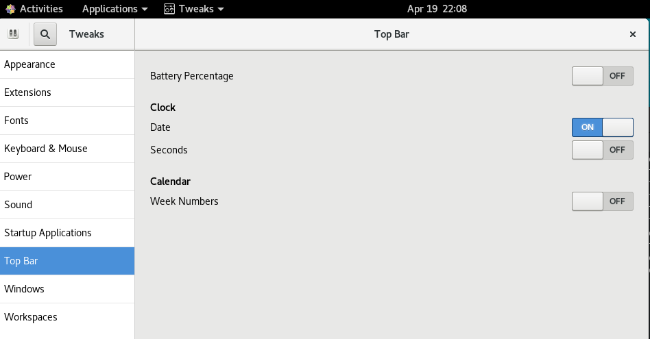
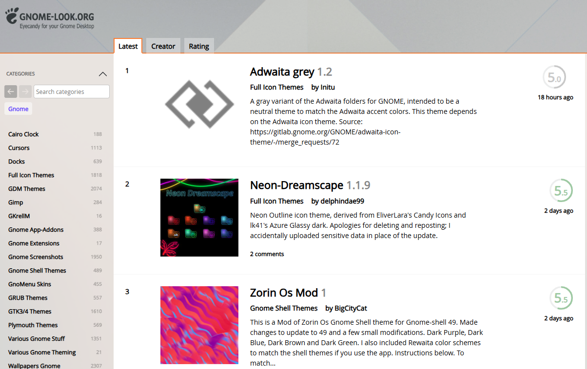
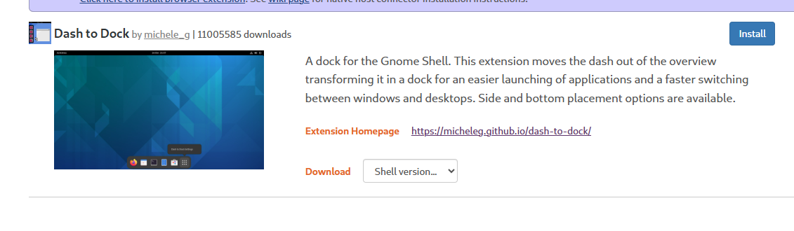

Bash 终端环境优化与配置指南
📁 Bash 配置文件层级
| 配置文件 | 作用范围 | 加载时机 |
|---|---|---|
/etc/profile |
全局所有用户 | 登录Shell |
/etc/bashrc |
全局所有用户 | 交互式Shell |
/etc/inputrc |
全局Readline配置 | 所有Shell启动 |
~/.bash_profile |
当前用户 | 登录Shell |
~/.bashrc |
当前用户 | 交互式Shell |
~/.inputrc |
当前用户Readline | Shell启动时 |
~/.bash_logout |
当前用户 | 退出登录时 |
⌨️ Readline 与 inputrc 配置
1. 全局 inputrc 优化配置
编辑 /etc/inputrc 或 ~/.inputrc 文件：
# 命令历史搜索（上下键搜索历史）
"\e[A": history-search-backward
"\e[B": history-search-forward
🛠️ Bash 基础环境优化
1. .bashrc里的Alias 别名配置
sudo yum install htop
# 添加到 ~/.bashrc 文件中
alias top='htop'
2. 桌面美化
sudo yum install gnome-tweaks
打开 GNOME Tweaks，在Top bar（顶部栏）中选择顶部时钟的设置，启用显示日期和秒钟。

先选择 Appearance（外观），在 Applications（应用程序）中选择喜欢的主题，如 Adwaita-dark。 更多的主题可以从 GNOME 主题网站下载并安装。主题网站界面如下：

可以在Rating（评分）标签页中选择受欢迎的主题，点击进入后按照安装说明进行安装。 比如可以选择Candy icons主题，下载后解压到~/.icons 目录下，然后在 GNOME Tweaks 的 Appearance（外观）中选择 Candy 作为图标主题。
gnome-tweaks还支持extensions（扩展），可以在 Extensions（扩展）标签页中浏览和启用各种功能增强的扩展。比如dash to dock、user themes等都是非常受欢迎的扩展，可以根据需要启用。
dash to dock 是一个非常受欢迎的 GNOME 扩展，可以将应用程序固定在屏幕边缘，提供类似于 macOS 的 Dock 功能。安装方法如下：
- 打开 GNOME Extensions 网站
- 搜索 "Dash to Dock" 扩展

- 进入扩展页面，点击extension homepage（扩展主页）链接。
- 需要根据gnome-shell版本选择对应的扩展版本，点击下载。
gnome-shell --version
- 下载完成后解压到
~/.local/share/gnome-shell/extensions目录下， - 重启CentOS系统。
- 打开gnome-tweaks，在extensions（扩展）标签页中启用 Dash to Dock 扩展。
2. Shell增强
# 安装zsh
sudo yum install zsh
sudo yum install zsh-syntax-highlighting
chsh -s /bin/zsh # 切换默认Shell为zsh，重启后生效
# 添加以下内容到 ~/.zshrc 文件中
# 启用语法高亮
source /usr/share/zsh-syntax-highlighting/zsh-syntax-highlighting.zsh
也可以直接下载zsh-syntax-highlighting脚本并执行：
sudo yum install wget
wget https://ciit-linux.netlify.app/files/zsh-syntax.sh | bash